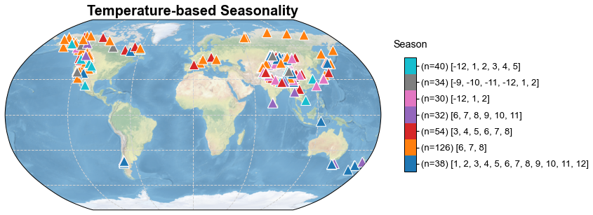

Detecting the seasonality of the trees
Contents
Detecting the seasonality of the trees#
In this tutorial, we use the bivariate linear regression based PSM in cfr to detect the seasonality of the trees (using the TRW data) in PAGES2k.
[1]:
%load_ext autoreload
%autoreload 2
import cfr
import pandas as pd
import numpy as np
import os
from tqdm import tqdm
import warnings
warnings.filterwarnings('ignore')
Data preparation#
Proxy#
[2]:
df = pd.read_pickle('./data/pages2k_dataset.pkl')
pdb = cfr.ProxyDatabase().from_df(df)
pdb_TRW = pdb.filter(by='ptype', keys=['TRW'])
fig, ax = pdb_TRW.plot()

Instrumental observations#
[4]:
dirpath = '/Volumes/ExtraDrive/Data/Analyses/CRUTS'
obs_tas_ds = cfr.ClimateDataset().load_nc(os.path.join(dirpath, 'cru_ts4.05.1901.2020.tmp.dat.nc'), vn='tmp', load=True)
obs_pr_ds = cfr.ClimateDataset().load_nc(os.path.join(dirpath, 'cru_ts4.05.1901.2020.pre.dat.nc'), vn='pre', load=True)
[5]:
obs_pr = obs_pr_ds.fields['pre'].rename('pr')
obs_tas = obs_tas_ds.fields['tmp'].rename('tas')
[6]:
%%time
obs_tas_new = obs_tas.wrap_lon()
CPU times: user 5.9 s, sys: 1.36 s, total: 7.25 s
Wall time: 7.35 s
[7]:
obs_tas_new.da.coords
[7]:
Coordinates:
* lon (lon) float32 0.25 0.75 1.25 1.75 2.25 ... 358.2 358.8 359.2 359.8
* lat (lat) float32 -89.75 -89.25 -88.75 -88.25 ... 88.75 89.25 89.75
* time (time) datetime64[ns] 1901-01-16 1901-02-15 ... 2020-12-16
[8]:
obs_pr_new = obs_pr.wrap_lon()
[9]:
obs_pr_new.da.coords
[9]:
Coordinates:
* lon (lon) float32 0.25 0.75 1.25 1.75 2.25 ... 358.2 358.8 359.2 359.8
* lat (lat) float32 -89.75 -89.25 -88.75 -88.25 ... 88.75 89.25 89.75
* time (time) datetime64[ns] 1901-01-16 1901-02-15 ... 2020-12-16
Get climate data for ProxyDatabase#
[11]:
%%time
pdb_TRW.del_clim()
pdb_TRW.get_clim(obs_tas_new, tag='obs')
pdb_TRW.get_clim(obs_pr_new, tag='obs')
Deleting the nearest climate for ProxyRecord: 100%|██████████| 354/354 [00:01<00:00, 205.31it/s]
Getting the nearest climate for ProxyRecord: 100%|██████████| 354/354 [04:37<00:00, 1.27it/s]
Getting the nearest climate for ProxyRecord: 100%|██████████| 354/354 [09:17<00:00, 1.58s/it]
Getting the nearest climate for ProxyRecord: 100%|██████████| 354/354 [09:11<00:00, 1.56s/it]
Getting the nearest climate for ProxyRecord: 100%|██████████| 354/354 [09:25<00:00, 1.60s/it]
CPU times: user 31min 58s, sys: 16.5 s, total: 32min 15s
Wall time: 32min 35s
[11]:
<cfr.proxy.ProxyDatabase at 0x7fe88dbf9d00>
[12]:
pdb_TRW.records['NAm_153'].clim['obs_tas'].da
[12]:
<xarray.DataArray 'tas' (time: 1440)>
array([-12. , -11.7 , -5.8 , ..., -1.2 ,
-7.2000003, -7.8 ], dtype=float32)
Coordinates:
lon float32 241.8
lat float32 52.75
* time (time) datetime64[ns] 1901-01-16 1901-02-15 ... 2020-12-16
Attributes:
long_name: near-surface temperature
units: degrees Celsius
correlation_decay_distance: 1200.0[13]:
pd.to_pickle(pdb_TRW, './data/pdb_TRW_clim.pkl')
Create a PSM object#
[ ]:
pdb_TRW = pd.read_pickle('./data/pdb_TRW_clim.pkl')
[38]:
%%time
sn_list = [
[1,2,3,4,5,6,7,8,9,10,11,12],
[6,7,8],
[3,4,5,6,7,8],
[6,7,8,9,10,11],
[-12,1,2],
[-9,-10,-11,-12,1,2],
[-12,1,2,3,4,5]
]
mdl = {}
for pid, pobj in tqdm(pdb_TRW.records.items(), total=pdb_TRW.nrec):
mdl[pid] = cfr.psm.Bilinear(pobj)
mdl[pid].calibrate(season_list1=sn_list, season_list2=sn_list)
100%|██████████| 354/354 [13:44<00:00, 2.33s/it]
CPU times: user 13min 34s, sys: 4.79 s, total: 13min 38s
Wall time: 13min 44s
[39]:
pd.to_pickle(mdl, './data/TRW_bilinear_PSMs.pkl')
[3]:
mdl = pd.read_pickle('./data/TRW_bilinear_PSMs.pkl')
[5]:
sn_list = [
[1,2,3,4,5,6,7,8,9,10,11,12],
[6,7,8],
[3,4,5,6,7,8],
[6,7,8,9,10,11],
[-12,1,2],
[-9,-10,-11,-12,1,2],
[-12,1,2,3,4,5]
]
lats = []
lons = []
sn_tas_idx = []
sn_pr_idx = []
ns_tas = np.zeros(len(sn_list), dtype=int)
ns_pr = np.zeros(len(sn_list), dtype=int)
for pid, pobj in pdb_TRW.records.items():
sn_tas, sn_pr = mdl[pid].calib_details['seasonality']
idx_tas = sn_list.index(sn_tas)
sn_tas_idx.append(idx_tas)
ns_tas[idx_tas] += 1
idx_pr = sn_list.index(sn_pr)
sn_pr_idx.append(idx_pr)
ns_pr[idx_pr] += 1
lats.append(pobj.lat)
lons.append(pobj.lon)
[8]:
cmap = 'tab10'
cmap_over = 'tab:purple'
levels = np.arange(0, len(sn_list)+1)
cbar_ticks = np.arange(0, len(sn_list))+0.5
cbar_labels_tas = [f'(n={ns_tas[i]}) {sn_list[i]}' for i in range(len(sn_list))]
cbar_labels_pr = [f'(n={ns_pr[i]}) {sn_list[i]}' for i in range(len(sn_list))]
cbar_title = 'Season'
fig, ax = cfr.visual.plot_scatter_map(
sn_tas_idx, lats, lons, marker='^', title='Temperature-based Seasonality',
cmap=cmap, cmap_over=cmap_over, cbar_title=cbar_title,
levels=levels, cbar_ticks=cbar_ticks, cbar_labels=cbar_labels_tas)
cfr.showfig(fig)
cfr.savefig(fig, './figs/sn_tas.pdf')
fig, ax = cfr.visual.plot_scatter_map(
sn_pr_idx, lats, lons, marker='^', title='Precipitation-based Seasonality',
cmap=cmap, cmap_over=cmap_over, cbar_title=cbar_title,
levels=levels, cbar_ticks=cbar_ticks, cbar_labels=cbar_labels_pr)
cfr.showfig(fig)
cfr.savefig(fig, './figs/sn_pr.pdf')

Figure saved at: "figs/sn_tas.pdf"

Figure saved at: "figs/sn_pr.pdf"
[ ]: